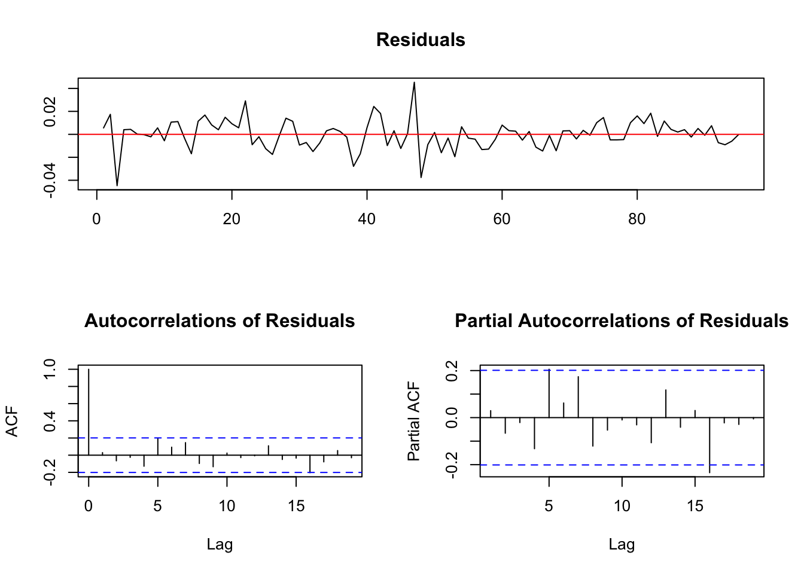
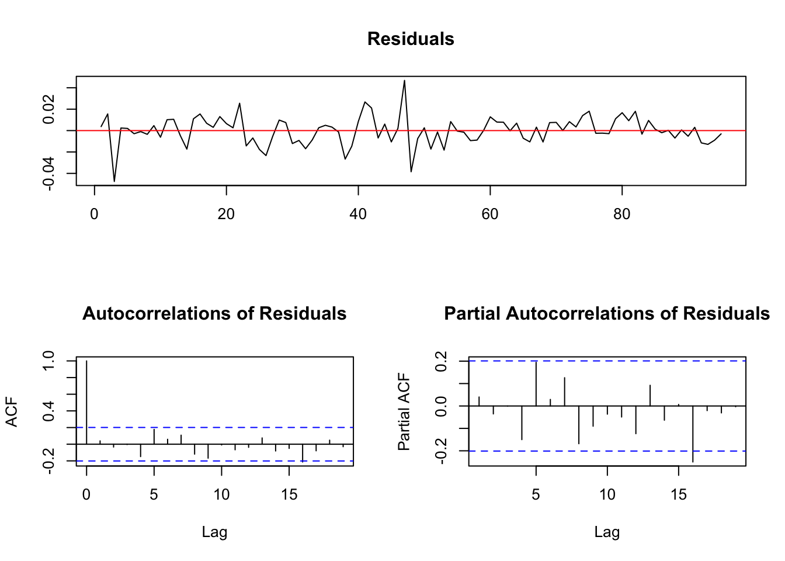
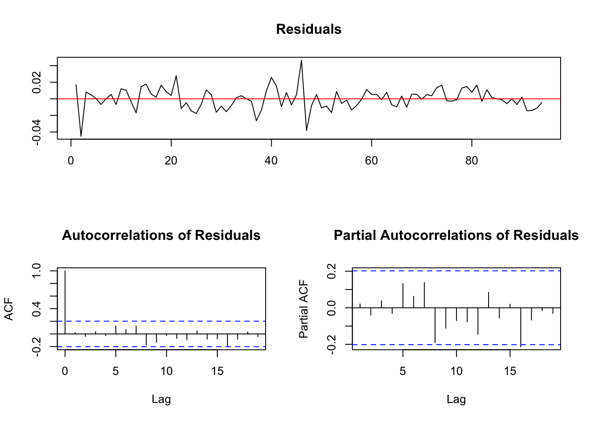

Chapter 3 Orden de Integración (Teoría)
En el modelo
\[ y_t = a_1y_{t-1}+\epsilon_t\]
Al restar por \(y_{t-1}\) en ambos lados de la ecuación, podemos llegar a la siguiente expresión equivalente:
\[ \nabla y_t = \gamma y_{t-1}+\epsilon_t\]
donde \(\gamma = a_1-1\). Por lo tanto, realizar la prueba de hipótesis \(a_1=1\) es equivalente a probar que \(\gamma=0\). Dickey y Fuller consideran tres tipos de ecuaciones de regresión que pueden ser utilizadas para probar la presencia de raíces unitarias:
- \(\nabla y_t = \gamma y_{t-1} + \epsilon_t\)
- \(\nabla y_t = a_0 + \gamma y_{t-1} + \epsilon_t\)
- \(\nabla y_t = a_0 + \gamma y_{t-1} + a_2t + \epsilon_t\)
El primero de ellos es un modelo puro de caminata aleatoria, el segundo agrega un intercepto o drift y el tercero incluye tanto un drift como una tendencia lineal temporal.
El parámetro de interés en todas estas ecuaciones es \(\gamma\); Si \(\gamma=0\) entonces la serie \(y_t\) contiene una raíz unitaria. La prueba se reduce en estimar las ecuaciones anteriormente mencionadas via OLS, de tal manera que se obtenga el valor estimado del parametro \(\gamma\) y su error estandar asociado. Dicho estadistico \(t\) se debe comparar con sus correspondientes valores de acuerdo con las tablas creadas por Dicckey-Fuller.
Esta metodología se sigue para cualquiera de las tres ecuaciones enunciadas anteriormente, sin embargo, el detalle es que cambian los valores criticos de Dickey-Fuller dependiendo la ecuacion utilizada para estimar el valor del parametro \(\gamma\). Dickey-Fuller concluyeron que los valores criticos para \(\gamma=0\) dependen del tipo de regresión y el tamaño de la muestra.
Los estadísticos \(\tau_1\), \(\tau_2\), \(\tau_3\) son los estadísticos apropiados para usar en las ecuaciones (1), (2) y (3) respectivamente. Los valores reportados en las tablas de Dickey-Fuller permiten al investigador determinar si aceptar o rechazar la hipótesis nula \(\gamma=0\) unicamente.
Adicionalmente Dickey and Fuller crearon tres F-estadisticos adicionales llamados \(\phi_1,\phi_2,\phi_3\) para probar pruebas de hipotesis conjuntas:
- El estadistico \(\phi_1\) .- Emplea la ecuacion numero 2 para probar la hipotesis nula conjunta \(\gamma=a_0=0\)
- El estadistico \(\phi_2\) .- Emplea la ecuacion numero 3 para probar la hipotesis nula conjunta \(\gamma=a_0=a_2=0\)
- El estadistico \(\phi_3\) .- Emplea la ecuacion numero 3 para probar la hipotesis nula conjunta \(\gamma=a_2=0\)
En donde los tres estadisticos se construyen igual que cualquier prueba \(F\):
\[ \phi_i = \frac{[RSS_{restricted}-RSS_{unrestricted}]r}{RSS_{unrestricted}(T-k)}\] donde \(RSS\) son las sumas al cuadrado de los residuales del modelo restringido vs el no restringido, \(r\) es el numero de restricciones, \(T\) el numero de observaciones usbales y \(k\) el numero de parametros estimados en el modelo sin restricciones.
Por lo tanto, la hipotesis nula es que los datos fueron generados por el modelo con restricciones y la alternativa es que los datos fueron generados por el modelo sin restricciones. Si la restriccion no se cumple, la suma de los cuadrados de ambos modelos deberian ser muy similares y por lo tanto \(\phi_i\) será pequeña. Asi pues, si el valor de \(\phi\) es grande quiere decir que se rechaza la hipotesis nula.
Usaremos la prueba ADF sobre la serie del consumo en UK usando datos trimestrales del perido 1966:Q4-1991:Q2. La serie del consumo esta ajustada estacionalmente a precios de 1985 y expresadas en su logaritmo natural.
Como un primer paso, una regresión con una constante y tendencia temporal será estimada, se agregarán 3 lags a la estimación para evitar la presencia de autocorrelaciones y autocorrelaciones parciales y asegurar un proceso esférico del error. Incluir el cuarto lag resultaba ser no significativo, mientras que incluir solo dos lags no eran suficientes para alcanzar errores serialmente no correlacionados.
data("Raotbl3")
attach(Raotbl3)
lc <- ts(lc, start=c(1966,4), end=c(1991,2),frequency=4)
lc.ct <- ur.df(lc,lags=3,type='trend')
summary(lc.ct)##
## ###############################################
## # Augmented Dickey-Fuller Test Unit Root Test #
## ###############################################
##
## Test regression trend
##
##
## Call:
## lm(formula = z.diff ~ z.lag.1 + 1 + tt + z.diff.lag)
##
## Residuals:
## Min 1Q Median 3Q Max
## -0.044714 -0.006525 0.000129 0.006225 0.045353
##
## Coefficients:
## Estimate Std. Error t value Pr(>|t|)
## (Intercept) 0.7976591 0.3547775 2.248 0.0270 *
## z.lag.1 -0.0758706 0.0338880 -2.239 0.0277 *
## tt 0.0004915 0.0002159 2.277 0.0252 *
## z.diff.lag1 -0.1063957 0.1006744 -1.057 0.2934
## z.diff.lag2 0.2011373 0.1012373 1.987 0.0500 .
## z.diff.lag3 0.2998586 0.1020548 2.938 0.0042 **
## ---
## Signif. codes: 0 '***' 0.001 '**' 0.01 '*' 0.05 '.' 0.1 ' ' 1
##
## Residual standard error: 0.01307 on 89 degrees of freedom
## Multiple R-squared: 0.1472, Adjusted R-squared: 0.09924
## F-statistic: 3.071 on 5 and 89 DF, p-value: 0.01325
##
##
## Value of test-statistic is: -2.2389 3.7382 2.5972
##
## Critical values for test statistics:
## 1pct 5pct 10pct
## tau3 -4.04 -3.45 -3.15
## phi2 6.50 4.88 4.16
## phi3 8.73 6.49 5.47plot(lc.ct)
Ahora bien la hipótesis \(\phi_3\) es probada bajo una usual prueba F, es decir, \(\phi_3=(a_0,\gamma,a_2) = (a_0,0,0)\). Esto es, se han colocado restricciones igual a cero a la tendencia temporal y el lag del la variable.
El valor del estadístico es
lc.ct@teststat## tau3 phi2 phi3
## statistic -2.238865 3.738151 2.597211Debemos recordar que se deben consular los valores críticos propuestas por Dickey and Fuller. Los valores críticos para una muestra de tamaño 100 y niveles de significancia del 10%,5% y 1% se muestran a continuación
lc.ct@cval## 1pct 5pct 10pct
## tau3 -4.04 -3.45 -3.15
## phi2 6.50 4.88 4.16
## phi3 8.73 6.49 5.47Por lo tanto, la hipótesis nula no puede ser rechazada, lo cual implica que la serie contiene una raíz unitaria. Esto puede ser reiterado con el estadístico \(\tau_3\) con valor de -2.24 y para la variable z.lag.1. Los valore críticos relevantes que debemos utilizar ahora son los de Fuller[1976], los cuales se muestran para una muestra de tamaño 100.
Luego entonces, la presencia de una raíz unitaria no puede rechazada. El siguiente paso, es probar si la serie es una caminata aleatoria con o sin drift (constante). El estadístico relevante es \(\phi_2\) \((\gamma=a_0=a_2=0)\) el cual tiene un valor de 3.74, con valores críticos de 4.16, 4.88 y 6.50 para niveles de significancia de 10%, 5% y 1% respectivamente. La conclusión es entonces que la serie se comporta como una caminata aleatoria pura.
Uno procede entonces a estimar la ecuación \(\nabla y_t = a_0 + \gamma y_{t-1} + \epsilon_t\) basado en los resultados obtenidos por la prueba \(\phi_3\). Los resultados se muestran a continuación:
lc.co <- ur.df(lc,lags=3,type='drift')
summary(lc.co)##
## ###############################################
## # Augmented Dickey-Fuller Test Unit Root Test #
## ###############################################
##
## Test regression drift
##
##
## Call:
## lm(formula = z.diff ~ z.lag.1 + 1 + z.diff.lag)
##
## Residuals:
## Min 1Q Median 3Q Max
## -0.047547 -0.007071 0.000265 0.007731 0.046880
##
## Coefficients:
## Estimate Std. Error t value Pr(>|t|)
## (Intercept) 0.0123237 0.0851358 0.145 0.8852
## z.lag.1 -0.0007356 0.0079043 -0.093 0.9261
## z.diff.lag1 -0.1433015 0.1016454 -1.410 0.1620
## z.diff.lag2 0.1615256 0.1020242 1.583 0.1169
## z.diff.lag3 0.2585280 0.1027364 2.516 0.0136 *
## ---
## Signif. codes: 0 '***' 0.001 '**' 0.01 '*' 0.05 '.' 0.1 ' ' 1
##
## Residual standard error: 0.01337 on 90 degrees of freedom
## Multiple R-squared: 0.09747, Adjusted R-squared: 0.05735
## F-statistic: 2.43 on 4 and 90 DF, p-value: 0.05335
##
##
## Value of test-statistic is: -0.0931 2.8806
##
## Critical values for test statistics:
## 1pct 5pct 10pct
## tau2 -3.51 -2.89 -2.58
## phi1 6.70 4.71 3.86plot(lc.co)
Con el fin de completar la prueba, ahora se prueba si en este modelo un término constante hace falta. Las pruebas se muestran a continuación
lc.co@teststat## tau2 phi1
## statistic -0.09306748 2.880589lc.co@cval## 1pct 5pct 10pct
## tau2 -3.51 -2.89 -2.58
## phi1 6.70 4.71 3.86El valor del estadístico \(\phi_1\) que prueba \(\gamma=a_0=0\) es 2.88, el cual resulta ser no significativo comparado con los valores críticos mostrados.
Por lo tanto, se puede concluir que la serie contiene un raíz unitaria pero no contiene ni tendencia temporal ni tendencia constante en el proceso generador de los datos.
Finalmente, se probará si diferenciando la serie una vez es suficiente para alcanzar estacionariedad. La prueba se logra utilizando como insumo para la regresión a la serie diferenciada una vez.
lc2 <- diff(lc)
lc2.ct <- ur.df(lc2,type="trend",lags=3)
summary(lc2.ct)##
## ###############################################
## # Augmented Dickey-Fuller Test Unit Root Test #
## ###############################################
##
## Test regression trend
##
##
## Call:
## lm(formula = z.diff ~ z.lag.1 + 1 + tt + z.diff.lag)
##
## Residuals:
## Min 1Q Median 3Q Max
## -0.045039 -0.007870 0.000013 0.007807 0.046403
##
## Coefficients:
## Estimate Std. Error t value Pr(>|t|)
## (Intercept) 3.864e-03 3.051e-03 1.266 0.2087
## z.lag.1 -8.826e-01 2.013e-01 -4.385 3.2e-05 ***
## tt 3.186e-05 5.112e-05 0.623 0.5348
## z.diff.lag1 -2.253e-01 1.873e-01 -1.203 0.2321
## z.diff.lag2 -4.668e-02 1.600e-01 -0.292 0.7711
## z.diff.lag3 1.775e-01 1.057e-01 1.679 0.0967 .
## ---
## Signif. codes: 0 '***' 0.001 '**' 0.01 '*' 0.05 '.' 0.1 ' ' 1
##
## Residual standard error: 0.01329 on 88 degrees of freedom
## Multiple R-squared: 0.6147, Adjusted R-squared: 0.5929
## F-statistic: 28.08 on 5 and 88 DF, p-value: < 2.2e-16
##
##
## Value of test-statistic is: -4.3853 6.4477 9.6164
##
## Critical values for test statistics:
## 1pct 5pct 10pct
## tau3 -4.04 -3.45 -3.15
## phi2 6.50 4.88 4.16
## phi3 8.73 6.49 5.47lc2.ct@teststat## tau3 phi2 phi3
## statistic -4.385326 6.447681 9.616431lc2.ct@cval## 1pct 5pct 10pct
## tau3 -4.04 -3.45 -3.15
## phi2 6.50 4.88 4.16
## phi3 8.73 6.49 5.47plot(lc2.ct)
La hipótesis de que el consumo es \(I(2)\) puede ser descartado rápidamente dado el estadístico \(t\) con valor de -4.39.
Debe notarse que las pruebas de Dickey-Fuller asumen que los errores son independientes y tienen varianza constante. Esto genera 4 importantes problemas relacionados con el hecho de que no conocemos el verdadero proceso generador de los datos:
- El verdadero proceso generador de los datos puede contener componentes autorregresivas como componentes de promedios móviles
- No se puede estimar correctamente \(\gamma\) y su error estándar amenos que todos los términos autorregresivos sean incluidos en la ecuación a estimar (seleccionar el lag length apropiado)
- El hecho de que la preuba de Dickey-Fuller considera únicamente una raíz unitaria, por lo que llevar una serie de un orden de integración mayor, requeire de diferenciarla tantas veces como sea necesario
- No tenemos certeza de si incluir un intercepto o una tendencia temporal a la ecuación
El primero de los puntos se resuelve fácilmente ya que un modelo MA invertible (si sus raíces caen fuera del círculo unitario) puede ser expresado en un modelo autorregresivo con lags infinitos. Afortunadamente, Said y Dickey (1984) demuestran que un proceso ARIMA(p,1,q) puede ser correctamente aproximado por un modelo ARIMA(n,1,0) autorregresivo de orden \(T^{1/3}\).
El segundo punto es muy importante ya que incluir demasidos lags reduce el poder de las pruebas estadísticas para rechazar la hipótesis nula de que existe raíz unitara, ya que un mayor número de lags necesita un mayor número de parámetros a estimar y una pérdida en grados de libertad. Los grados de libertad se reducen ya que el número de parámetros a estimar aumenta y por que el número de observaciones utilizables se reduce (perdemos una por cada lag). Por otro lado, definir pocos lags provoca que no capturemos apropiadamente el error process, por lo que \(\gamma\) y su error estandar no estarán bien estimados. Para solucionar este tema se sugeire empezar por un número suficientemente grande de lags e ir reduciendo hasta que el i-ésimo lag sea estadísticamente significativo de acuerdo a las preubas t. Una vez que el lag ha sido determinado, se procede a realizar un diagnóstico, graficar los residuales es el diagnóstico más importante. No debe haber evidencia de cambios estructurales ni correlación serial.
El tercer punto se puede atacar de manera secuencial tomando como input la serie diferenciada, y el proceso se repite hasta que se alcance la estacionariedad.
El cuarto punto
https://bookdown.org/ccolonescu/RPoE4/vec-and-var-models.html